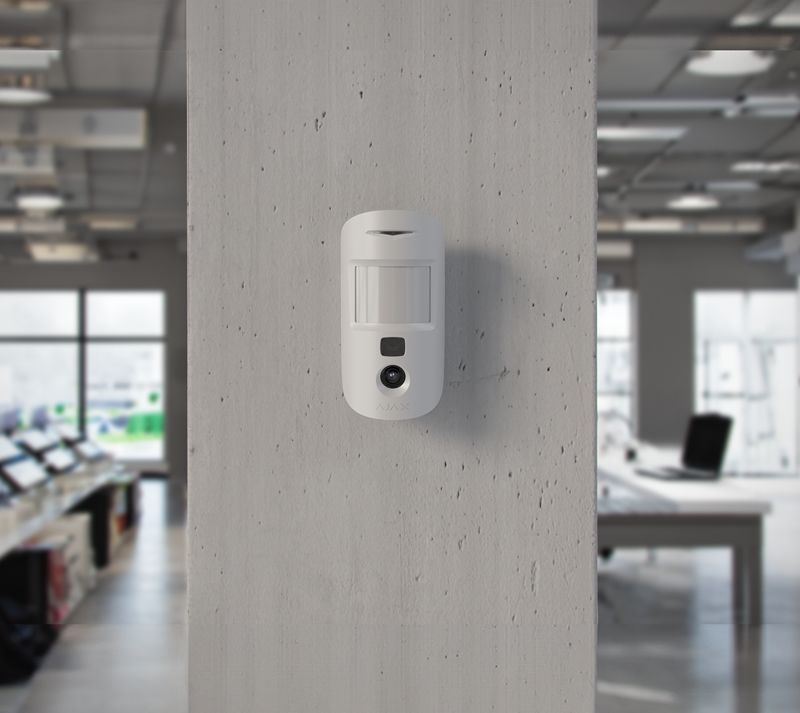
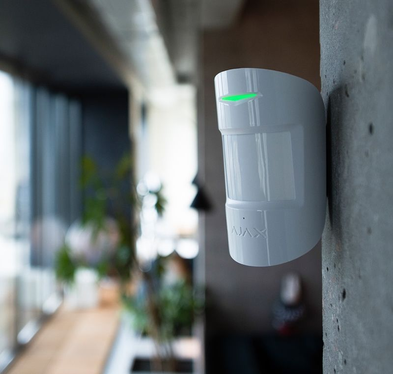
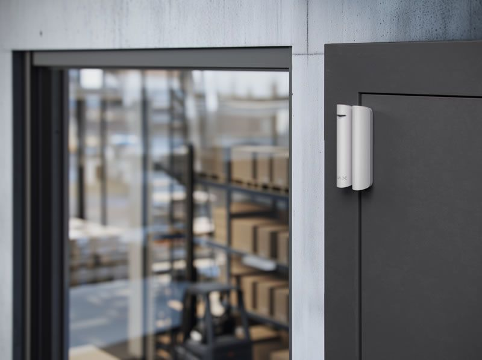
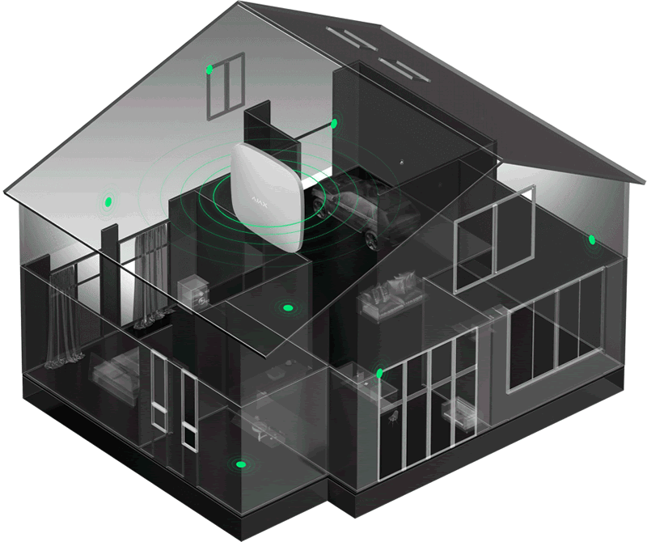
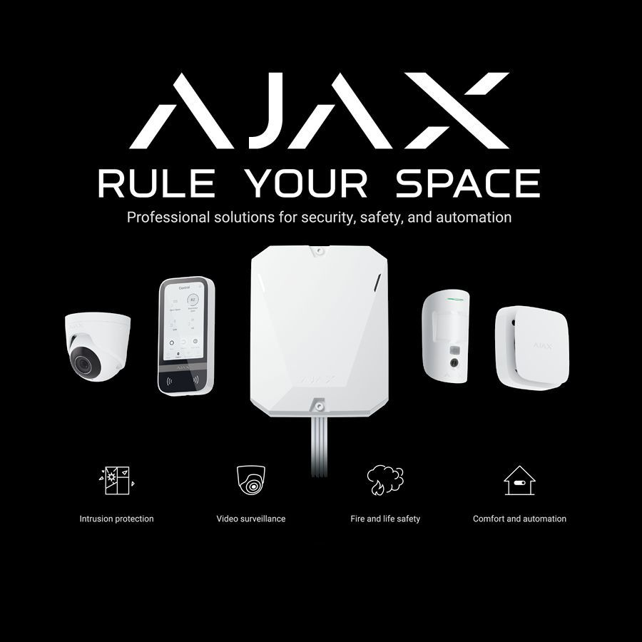

On this page
AT A GLANCE
At the heart of an effective security strategy are robust alarm systems, designed to alert you at the first sign of intrusion or irregularities.
Effective Alarm Systems

At the heart of an effective security strategy are robust alarm systems, designed to alert you at the first sign of intrusion or irregularities. SPL Security Solutions presents an extensive range of alarm technologies tailored to suit a diversity of environments and security levels. From basic setups to sophisticated networked systems, our alarms integrate seamlessly with your security infrastructure, ensuring immediate notification and response when it matters most. We’ll recommend, supply and fit your new system in no time at a very reasonable cost.
What's more, you could benefit from integration with remote access tools, meaning you can stay informed and in control from anywhere in the world via your smartphone or other connected devices. With the added reassurance of backup power solutions, our alarm systems remain vigilant even in the face of power outages.
Call us today on (07) 5588 8111 to discuss your specific requirements and arrange for a no-obligation security assessment. We also supply security and CCTV cameras, intercoms and access control systems throughout the Gold Coast, Brisbane and Northern NSW.
Residential Alarm Systems
For those in search of residential security, our home alarm systems provide the peace of mind that comes from knowing your loved ones and belongings are protected around the clock. Whether you're awake, asleep or away on holiday, our alarms will work tirelessly to deter intruders and other potential threats.
Our residential alarm systems can be configured to suit homes of any size or layout. They're also straightforward to operate and maintain, meaning you don't need a degree in engineering to use them! With their compact design, our alarms are discreetly fitted into your existing infrastructure without unsightly cables or components.

Commercial Alarm Systems

Commercial alarm systems cater to a slightly different audience. They're built for those with more complex security needs including businesses, public buildings and other high-traffic premises. Our commercial systems work in conjunction with your existing infrastructure, creating an integrated network that's always on the lookout for unauthorised access.
From retail outlets to industrial premises, our commercial alarm systems can be tailored to suit any environment. Not only that, our annual inspection and maintenance services ensure your system remains in perfect working order all year round. A security alarm can also reduce your commercial insurance costs by deterring and preventing break-ins, theft and vandalism.
Frequently Asked Questions
-
Is an alarm system a worthwhile investment?
Yes! An alarm system is a worthwhile investment for homes and businesses on the Gold Coast for many reasons. If you’re thinking about installing an alarm system in your home, you could enjoy advantages including the peace of mind that comes with improved security.
-
Do alarm systems really work as a deterrent?
In many cases, a visible alarm system will act as a deterrent against potential intruders or burglars. This is because intruders gravitate towards properties with weaker security support as there is less chance of being caught.
-
How much do alarm systems cost?
The cost of an alarm system depends on various factors such as the type and size of the property, the number of entry points that need to be secured and any additional features or customisations. We offer competitive prices for our alarm systems and can provide a free consultation and quote based on your specific needs.
-
Will installing a security system decrease my insurance premiums?
Though it may vary between insurance providers, many providers will decrease the premium of your insurance if you install an alarm system on your premises or property. This is because having an alarm system is viewed as an additional source of security. Of course, this depends on a number of other factors including the location and value of your property.
-
How often should my alarm system be tested?
The frequency in which you should test your alarm system varies by Australian Standards. Factors that influence how often you should have it checked include whether it’s a residential or commercial installation, the size of the system, and its features. Reach out to our team today to find out how often you should have your alarm system tested.
-
What should I do if I think my system is broken?
If you believe your alarm system is broken or in need of professional inspection, don’t worry! All of the security systems supplied and installed by SPL Security Solutions come with maintenance contracts and an annual inspection, which is the recommended frequency for testing. As soon as you think there's a problem, reach out to our team of experts.
-
Why should I choose SPL Security Solutions for my alarm system needs?
If you need a new alarm system installed for your Gold Coast home or business, look no further than SPL Security Solutions. Our technicians are fully qualified and have a broad selection of modern electric systems available for you to choose from. Get in touch with us today for further information on our current models or to arrange installation.

AJAX Security Systems

- Enhanced security and automation solution
The Ajax system is a comprehensive solution for making your house safe. It provides intrusion protection, video surveillance, fire detection, water leak prevention, and automation of lighting and appliances.
- Convenient system management in the Ajax app
The Ajax app offers effortless control over the security of the house and other facilities nearby. The same interface allows managing video surveillance and automation devices.
- Advanced home management
Ajax automation scenarios and devices can turn a regular house into a smart home: elevate lighting management, allow remote control of gates and home appliances, and enable automatic security mode changes.
- Stylish design and easy installation
All Ajax devices have a sleek design and fit perfectly into any interior. Wireless devices can be installed even after repairs, as they do not require additional wiring.